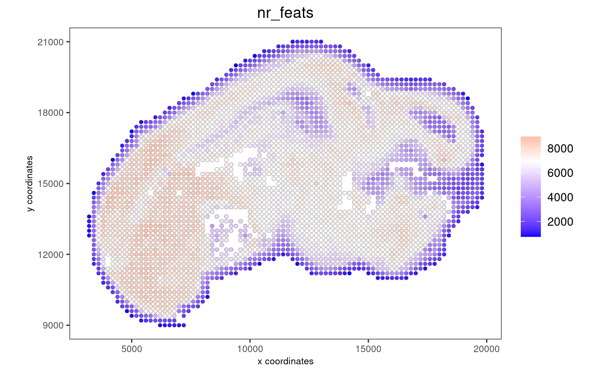
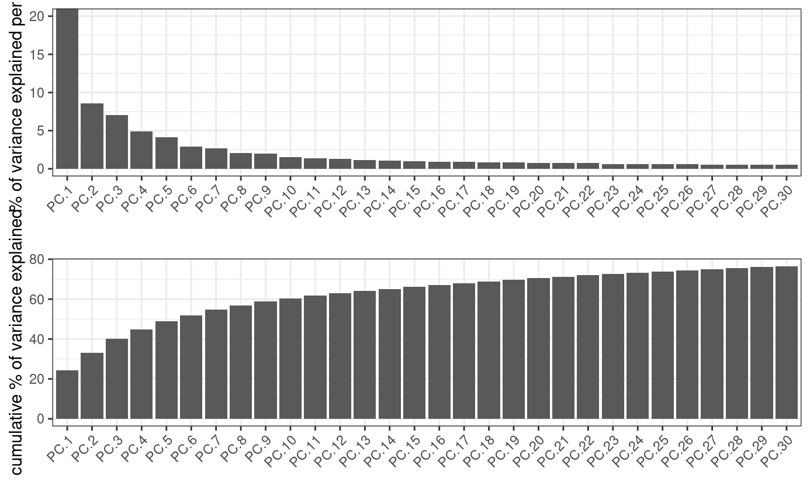
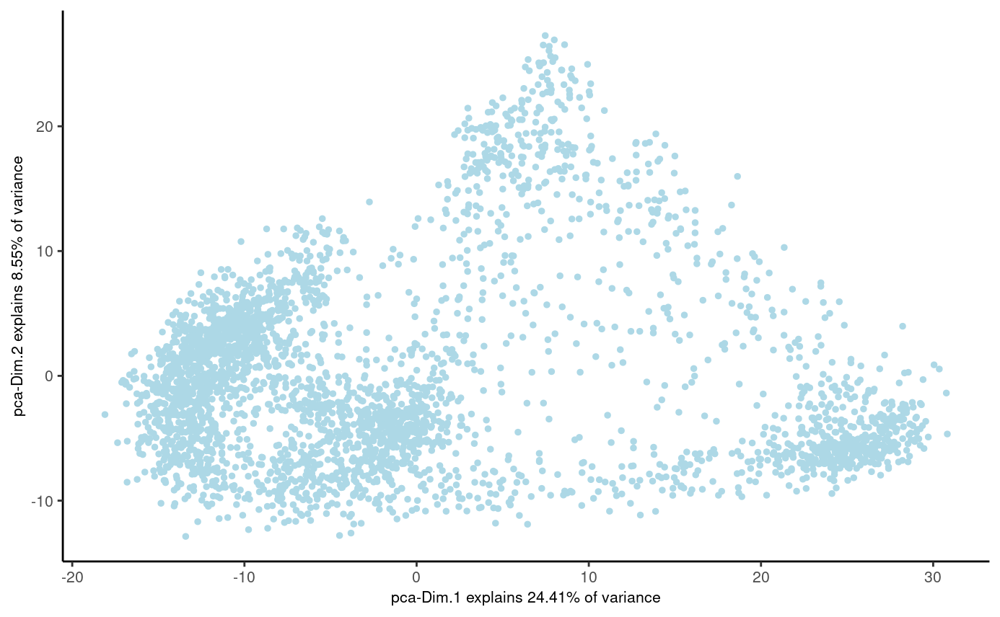
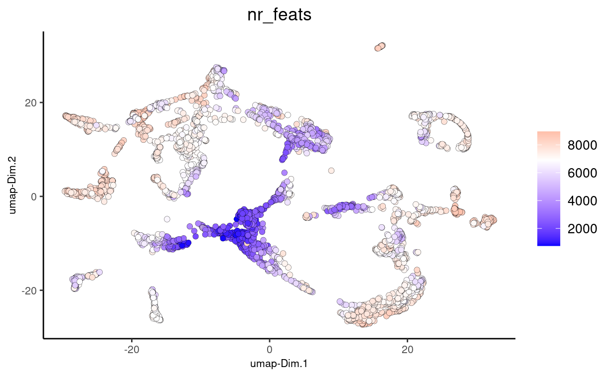
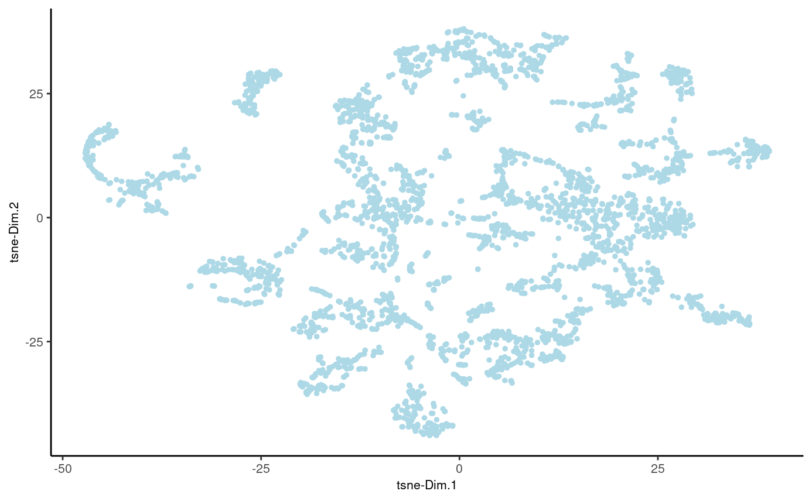
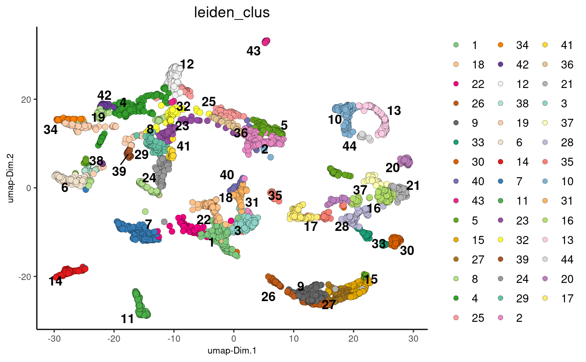
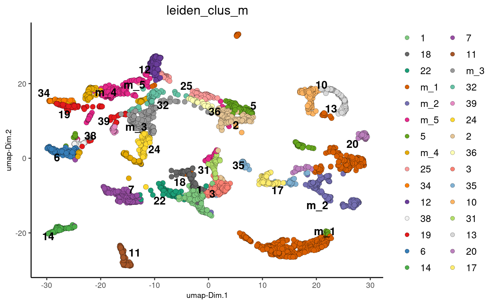
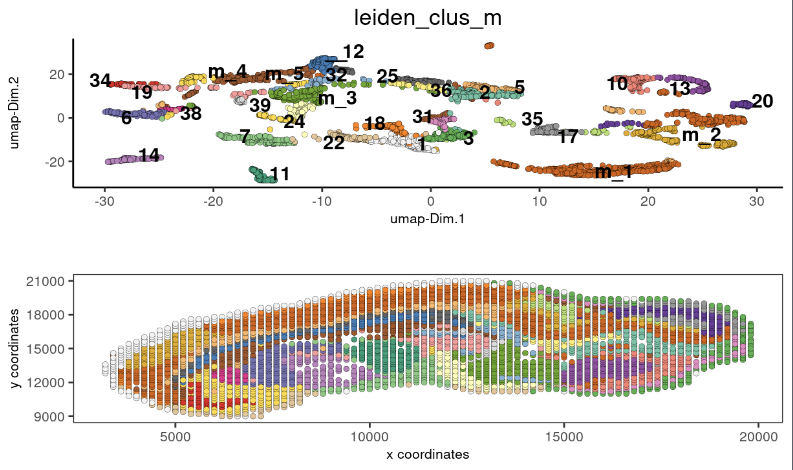
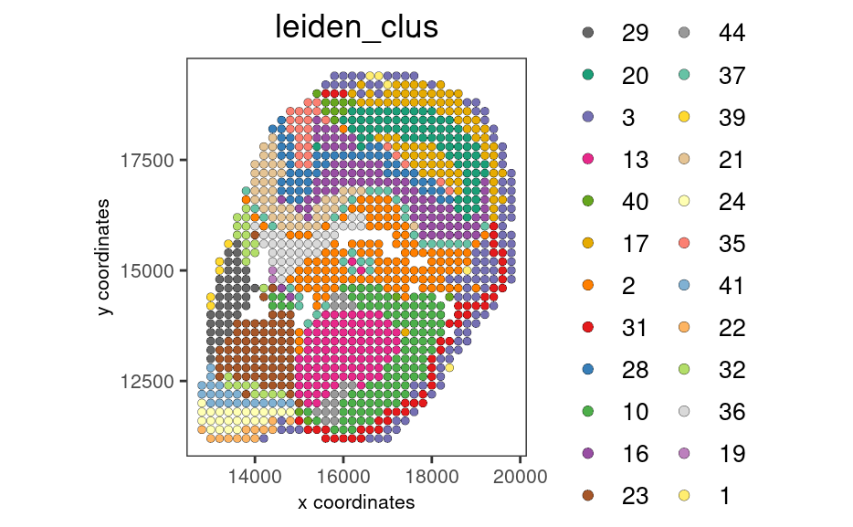

Dataset explanation
Stereo-seq is a sequencing-based spatial transcriptomics technology that was developed and used by Chen et al. in 2022 to generate the Mouse Organogenesis Spatiotemporal Transcriptomic Atlas (MOSTA). This tutorial demonstrates how to interactively filter and analyze the third sagittal section of a mouse embryo at embryonic day 12.5 (“E12.5_E1S3”) from MOSTA.
Pre-processing
The necessary input files for sample E12.5_E1S3 are publicly available and were downloaded from the following original sources:
- FASTQ files (https://db.cngb.org/search/sample/?q=CNP0001543)
- barcodeToPos.h5 file (https://db.cngb.org/stomics/mosta/download.html)
The STOMICS Analysis Workflow SAW pipeline was used to process these files. The output of the SAW pipeline is an .h5ad file at a specific bin size. One bin of size n represents an n x n square of aggregated spatial barcodes. In this tutorial, a sample with a bin size of 200 was used.
Start Giotto
# Ensure Giotto Suite is installed
if(!"Giotto" %in% installed.packages()) {
devtools::install_github("drieslab/Giotto@suite")
}
library(Giotto)
# Ensure the Python environment for Giotto has been installed
genv_exists = checkGiottoEnvironment()
if(!genv_exists){
# The following command need only be run once to install the Giotto environment.
installGiottoEnvironment()
}1. Create a Giotto object
# download E12.5_E1S3_bin200.h5ad output from SAW pipeline (509.4 MB)
# alternatively, specify path to *.h5ad output of SAW pipeline
anndata_download = "https://zenodo.org/record/7323947/files/E12.5_E1S3_bin200.h5ad?download=1"
anndata_file = "E12.5_E1S3_bin_200.h5ad"
download.file(anndata_download, anndata_file)
# convert anndata file to giotto object
stereo_go <- Giotto::anndataToGiotto(anndata_file)
# alternatively, specify path to *.gef output of SAW pipeline (requires Giotto v3.2.0 or higher)
# gef_file = "E12.5_E1S3.gef"
# stereo_go <- Giotto::gefToGiotto(gef_file, bin_size = "bin200")2. Process Giotto object
# filter number of genes
# important to discard bins (aggregated barcodes) outside of embryo
stereo_go <- stereo_go %>% filterGiotto(expression_threshold = 1,
feat_det_in_min_cells = 5,
min_det_feats_per_cell = 750)
# normalize
stereo_go <- stereo_go %>% normalizeGiotto(scalefactor = 5000, verbose = T)
# add statistics
stereo_go <- stereo_go %>% addStatistics()
# make plot
# each dot here represents a 200x200 aggregation of spatial barcodes (bin size 200)
spatPlot2D(gobject = stereo_go, cell_color = "nr_feats", color_as_factor = F, point_size = 1.5, show_plot = T, save_plot = F)
3. Dimension reduction
- Identify highly variable features (HVF)
stereo_go <- stereo_go %>% calculateHVF(zscore_threshold = 1, show_plot = F)- Perform PCA
- Identify the number of significant principal components (PCs)
stereo_go <- stereo_go %>% runPCA(expression_values = 'scaled', feats_to_use = 'hvf')
screePlot(stereo_go, ncp = 30)
plotPCA(stereo_go)

- Run UMAP and TSNE on PCs (or directly on matrix)
stereo_go <- stereo_go %>% runUMAP(dimensions_to_use = 1:30, n_threads = 4)
# plot UMAP, coloring cells/points based on nr_feats
plotUMAP(gobject = stereo_go,
cell_color = 'nr_feats', color_as_factor = F, point_size = 2)

4. Clustering
- Create a shared (default) nearest network in PCA space (or directly on matrix)
- Cluster on nearest network with Leiden or Louvan (kmeans and hclust are alternatives)
# sNN network (default)
stereo_go <- stereo_go %>% createNearestNetwork(dimensions_to_use = 1:30, k = 12)
# leiden clustering
stereo_go <- stereo_go %>% doLeidenCluster(resolution = 1, n_iterations = 1000)
plotUMAP(gobject = stereo_go, cell_color = 'leiden_clus', point_size = 2.5,
show_NN_network = F, edge_alpha = 0.05)
# merge small groups based on similarity
leiden_similarities = stereo_go %>% getClusterSimilarity(expression_values = 'scaled',
cluster_column = 'leiden_clus')
stereo_go = stereo_go %>% mergeClusters(expression_values = 'scaled',
cluster_column = 'leiden_clus',
new_cluster_name = 'leiden_clus_m',
max_group_size = 100,
force_min_group_size = 25,
max_sim_clusters = 10,
min_cor_score = 0.7)
plotUMAP(gobject = stereo_go, cell_color = 'leiden_clus_m', point_size = 2.5,
show_NN_network = F, edge_alpha = 0.05)

5. Co-visualization
- Co-visualize expression UMAP and spatial data clusters
spatDimPlot2D(gobject = stereo_go, cell_color = 'leiden_clus_m',
dim_point_size = 1.5, spat_point_size = 1.5,
show_plot = T, return_plot = F)
6. Spatial Genes
- Find genes with spatially coherent expression patterns
# create knn
stereo_go <- stereo_go %>% createSpatialNetwork(method = "kNN", k = 8)
# select 100 random genes
set.seed(144)
featureMetadata = fDataDT(stereo_go)
gene_list = featureMetadata[sample(length(featureMetadata$feat_ID), 100), "feat_ID"]
# use binSpect method to find spatial genes
spat_genes <- stereo_go %>% binSpect(expression_values = "scaled",
subset_feats = gene_list$feat_ID,
spatial_network_name = "kNN_network")7. Subsetting/Filtering
- Perform these steps to select an ROI using an interactive polygon selection tool.
- To draw a polygon on the interactive plot, click the mouse to start a line segment. Click again to draw the endpoint of the segment, which becomes the startpoint of the following segment. Click “Done” to close the app and save the polygon coordinates.
- See our tutorial on interactive selection/filtering in “Getting started” to learn more.
my_spatPlot <- spatPlot2D(gobject = stereo_go,
cell_color = 'leiden_clus',
color_as_factor = T,
show_plot = FALSE,
point_size = 2,
save_plot = FALSE)
# create a polygon mask around a ROI, coordinates will be saved after clicking 'Done'
library(shiny)
library(miniUI)
my_polygon_coordinates <- plotInteractivePolygons(my_spatPlot, height = 500)
# create new giotto object from polygon coordinates
lasso_polygons <- createGiottoPolygonsFromDfr(my_polygon_coordinates,
name = "cell",
calc_centroids = FALSE)
# store the polygons info within the giotto object
stereo_go <- addGiottoPolygons(gobject = stereo_go,
gpolygons = list(lasso_polygons))
# find intersection between original giotto object and polygon subset
my_intersect <- getCellsFromPolygon(stereo_go)
# create new giotto roi subset
stereo_go_subset <- stereo_go %>% subsetGiotto(cell_ids = my_intersect$cell_ID)
# visualize filtered ROI
# Your plot below will reflect the polygon(s) you constructed above in my_polygon_coordinates
spatPlot2D(gobject = stereo_go_subset, cell_color = 'leiden_clus',
color_as_factor = T, show_plot = FALSE,
point_size = 2,save_plot = FALSE)
sessionInfo()
R version 4.2.1 (2022-06-23)
Platform: x86_64-pc-linux-gnu (64-bit)
Running under: CentOS Linux 7 (Core)
Matrix products: default
BLAS: /share/pkg.7/r/4.2.1/install/lib64/R/lib/libRblas.so
LAPACK: /share/pkg.7/r/4.2.1/install/lib64/R/lib/libRlapack.so
locale:
[1] LC_CTYPE=en_US.UTF-8 LC_NUMERIC=C LC_TIME=en_US.UTF-8
[4] LC_COLLATE=en_US.UTF-8 LC_MONETARY=en_US.UTF-8 LC_MESSAGES=en_US.UTF-8
[7] LC_PAPER=en_US.UTF-8 LC_NAME=C LC_ADDRESS=C
[10] LC_TELEPHONE=C LC_MEASUREMENT=en_US.UTF-8 LC_IDENTIFICATION=C
attached base packages:
[1] stats graphics grDevices utils datasets methods base
other attached packages:
[1] miniUI_0.1.1.1 shiny_1.7.2 Giotto_2.1
loaded via a namespace (and not attached):
[1] systemfonts_1.0.4 plyr_1.8.8 igraph_1.3.5
[4] lazyeval_0.2.2 sp_1.5-1 splines_4.2.1
[7] BiocParallel_1.32.1 listenv_0.8.0 scattermore_0.8
[10] ggplot2_3.4.0 digest_0.6.30 htmltools_0.5.3
[13] fansi_1.0.3 memoise_2.0.1 magrittr_2.0.3
[16] ScaledMatrix_1.6.0 tensor_1.5 cluster_2.1.3
[19] ROCR_1.0-11 tzdb_0.3.0 remotes_2.4.2
[22] globals_0.16.1 readr_2.1.2 matrixStats_0.62.0
[25] spatstat.sparse_2.1-1 colorspace_2.1-0 rappdirs_0.3.3
[28] ggrepel_0.9.1 textshaping_0.3.6 xfun_0.34
[31] dplyr_1.0.10 crayon_1.5.2 jsonlite_1.8.3
[34] progressr_0.10.1 spatstat.data_2.2-0 survival_3.3-1
[37] zoo_1.8-10 glue_1.6.2 polyclip_1.10-0
[40] gtable_0.3.1 leiden_0.4.2 DelayedArray_0.24.0
[43] BiocSingular_1.14.0 future.apply_1.10.0 BiocGenerics_0.44.0
[46] abind_1.4-7 scales_1.2.1 DBI_1.1.3
[49] spatstat.random_2.2-0 Rcpp_1.0.9 viridisLite_0.4.1
[52] xtable_1.8-6 rsthemes_0.3.1 reticulate_1.26
[55] spatstat.core_2.4-4 rsvd_1.0.5 bit_4.0.4
[58] stats4_4.2.1 htmlwidgets_1.5.4 httr_1.4.4
[61] FNN_1.1.3.1 RColorBrewer_1.1-3 ellipsis_0.3.2
[64] Seurat_4.1.1 ica_1.0-3 pkgconfig_2.0.3
[67] farver_2.1.1 sass_0.4.2.9000 uwot_0.1.14
[70] deldir_1.0-6 utf8_1.2.2 here_1.0.1
[73] tidyselect_1.2.0 labeling_0.4.2 rlang_1.0.6
[76] reshape2_1.4.4 later_1.3.0 cachem_1.0.6
[79] munsell_0.5.0 tools_4.2.1 cli_3.4.1
[82] dbscan_1.1-11 generics_0.1.3 ggridges_0.5.3
[85] evaluate_0.18 stringr_1.4.1 fastmap_1.1.0
[88] ragg_1.2.2 yaml_2.3.6 goftest_1.2-3
[91] knitr_1.40 bit64_4.0.5 fitdistrplus_1.1-8
[94] purrr_0.3.5 RANN_2.6.1 pbapply_1.5-0
[97] future_1.29.0 nlme_3.1-158 mime_0.12
[100] arrow_9.0.0 hdf5r_1.3.5 compiler_4.2.1
[103] rstudioapi_0.14 plotly_4.10.1 png_0.1-7
[106] spatstat.utils_2.3-1 tibble_3.1.8 bslib_0.4.1
[109] stringi_1.7.8 rgeos_0.5-9 lattice_0.20-45
[112] Matrix_1.5-1 SeuratDisk_0.0.0.9020 vctrs_0.5.0
[115] pillar_1.8.1 lifecycle_1.0.3 jquerylib_0.1.4
[118] spatstat.geom_2.4-0 lmtest_0.9-40 RcppAnnoy_0.0.20
[121] data.table_1.14.4 cowplot_1.1.1 irlba_2.3.5.1
[124] httpuv_1.6.6 patchwork_1.1.0.9000 R6_2.5.1
[127] promises_1.2.0.1 KernSmooth_2.23-20 gridExtra_2.3
[130] IRanges_2.32.0 parallelly_1.32.1 codetools_0.2-18
[133] MASS_7.3-57 gtools_3.9.3 assertthat_0.2.1
[136] rprojroot_2.0.3 withr_2.5.0 SeuratObject_4.1.0
[139] sctransform_0.3.3 S4Vectors_0.36.0 mgcv_1.8-40
[142] parallel_4.2.1 hms_1.1.1 terra_1.5-34
[145] beachmat_2.14.0 grid_4.2.1 rpart_4.1.16
[148] tidyr_1.2.1 rmarkdown_2.18 MatrixGenerics_1.10.0
[151] Rtsne_0.16